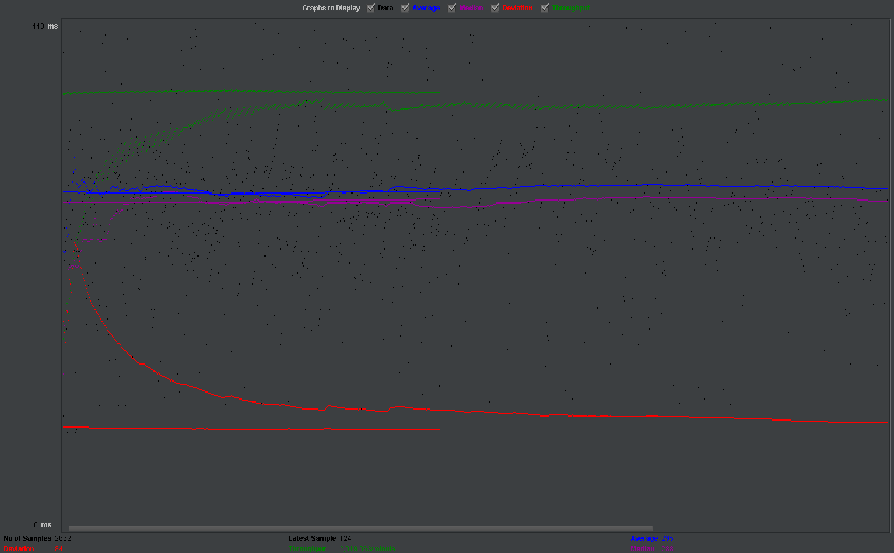
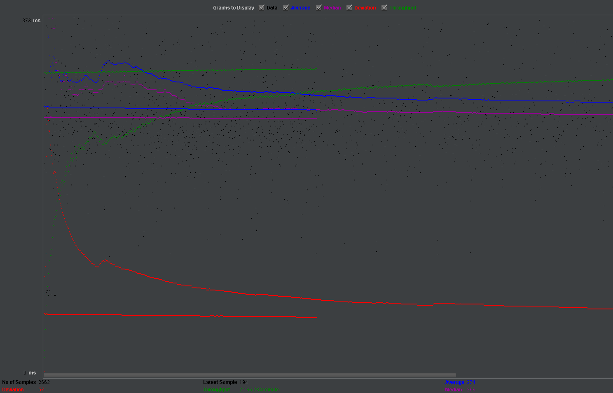
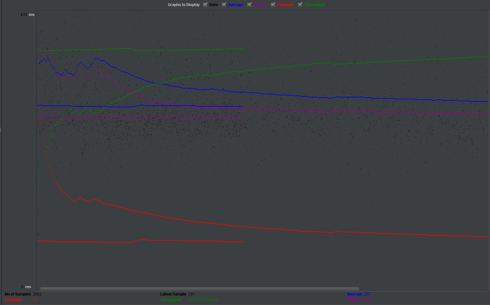
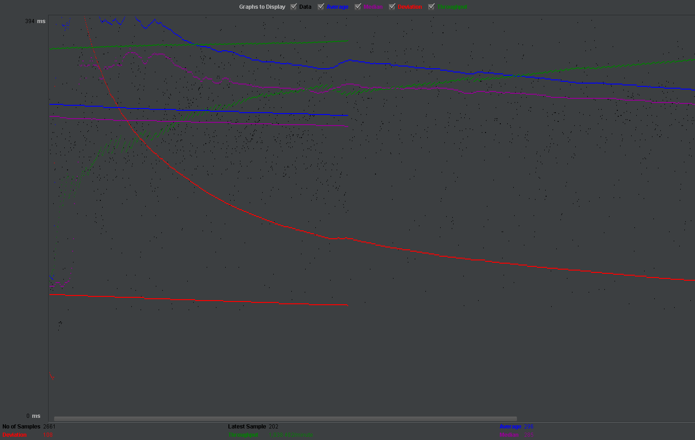
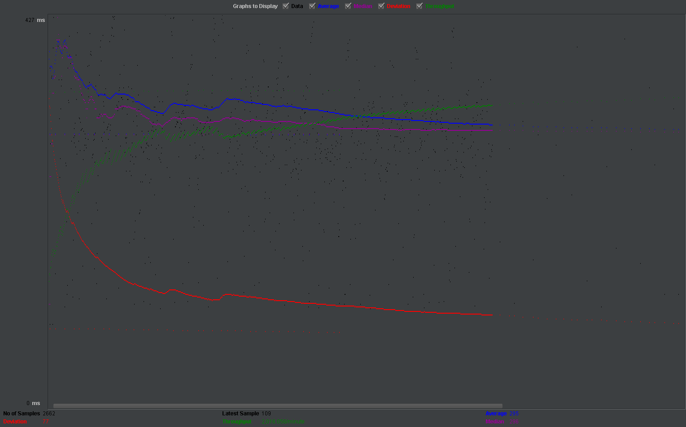

| Single-instance version cases |
Graph Results Screenshot |
Average Query Time(ms) |
Average Search Servlet Time(ms) |
Average JDBC Time(ms) |
Analysis |
| Case 1: HTTP/1 thread |
 |
112 |
26.96 |
12.7 |
This is the first and basic stats that will be used to compare in the future. |
| Case 2: HTTP/10 threads |
|
282 |
189.45 |
92.74 |
After adding up the threads, the time waiting on the server side will be much longer than before,
since all of requests sent out are waiting for the response from server side. However, for single thread,
requests are only sent one by one, so 10 thread will be slower than 1 thread. |
| Case 3: HTTPS/10 threads |
 |
285 |
188.62 |
98.01 |
From the stats that, the query time for HTTPS is bit slower than HTTP, but for its underneath struture has no any difference
so the time difference between HTTP and HTTPS is not too big. |
| Case 4: HTTP/10 threads/No prepared statements |
 |
274 |
182.54 |
90.35 |
This data is bit out of logic, because its even faster than with prepared statement, from our analysis
we removed all of unnecessary tags from context.xml except connection pooling, since in our local we need to change UTC time setting
etc for running since the language of my system is different. I may remove some unnecessary tags that helps connection to be faster. |
| Case 5: HTTP/10 threads/No connection pooling |
 |
287 |
193.57 |
95.29 |
Without connection pooling, it is obviously slower than with connection pooling, since the connection pooling reduced the time of opening new connection
, but difference is not too big here. One reason probably we use bots way, JMeter to test the system. For real users their speed of sending request is not that fast,
so the maximum number of connections in the pool usually can deal with similar numbers of users but in case here is different. |
| Scaled version cases |
Graph Results Screenshot |
Average Query Time(ms) |
Average Search Servlet Time(ms) |
Average JDBC Time(ms) |
Analysis |
| Case 1: HTTP/1 thread |
 |
115 |
28.05 |
12.54 |
For TJ time that using load balancer is faster, since it has two backend database to split the work up. However, because of sticky session
all of request will still send to 1 instance. |
| Case 2: HTTP/10 threads |
 |
296 |
199.18 |
101.78 |
There is no big difference between load balancer and single instance. An important reason is that when we check the log files from two instances
thier size is a little bit bias to one side. For load balancer to other cases we all have even size, so we think we didn't restart the apache2
we used before, so it didn't reach the expection we want. |
| Case 3: HTTP/10 threads/No prepared statements |
 |
280 |
185.81 |
92.11 |
This has similar situation as single instance case 4 above, we may remove some unnecessary setting for data source, so its speed even faster than
with prepared statement. |
| Case 4: HTTP/10 threads/No connection pooling |
 |
295 |
200.48 |
103.08 |
Without connection pooling, the case is always the slowest, since the servlet need to rebuild connections every time, even for the case using load balancer
and from all of above cases, load balancer didn't increase its speed too much but its main function is increase the scale. Indeed, we think that is reasonable. |